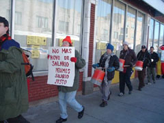

Direct Action Gets the Goods! - IWW Chicago Victory for Unpaid Worker
Submitted on Sun, 01/15/2006 - 5:42pm
By "Free Radical" - Originally posted at Chicago Indymedia.
 On January 14, 2005, members of the Chicago General Membership Branch of the Industrial Workers of the World labor union (IWW) called for an informational picket to boycott the Ideal Hand Car Wash in Chicago’s Albany Park neighborhood after the managers and owners of the business refused to pay Neal Rysdahl, a longtime member of the IWW, the $227.50 he was owed for over 45 hours of work he preformed for them.
On January 14, 2005, members of the Chicago General Membership Branch of the Industrial Workers of the World labor union (IWW) called for an informational picket to boycott the Ideal Hand Car Wash in Chicago’s Albany Park neighborhood after the managers and owners of the business refused to pay Neal Rysdahl, a longtime member of the IWW, the $227.50 he was owed for over 45 hours of work he preformed for them.
The highly visible protest began at 8 AM, with a small but dedicated group of picketers banging bucket drums, shaking noisemakers, passing out leaflets, and carrying signs reading, “Ideal Car Wash Cheats Workers,” and “An Injury to One is an Injury to All!” Notably, one picketer dressed in a clown costume held a sign reading, “Ideal Bosses Are Bozos!” to mock the clown Ideal usually uses to attract customers.
Humboldt Park Food Not Bombs showed up to serve bread, pastry, hummus, and coffee, and joined in the picket. “I knew this was an important picket to support because it was an opportunity to make a real difference in someone’s life through direct action,” said Robert Clack, a member of Humboldt Park Food Not Bombs.
The picket effectively shut down business at the car wash for the morning, as most drivers who intended to patronize Ideal drove away after talking with picketers or seeing signs blasting the business for unfair labor practices.
After only three hours of picketing, Eduardo “Eddie” Amanero, a manager of the car wash, agreed to pay Rysdahl in full, in cash, on the spot, in order to bring an end to the picket.
“The point of all this is, if you mess with one of us, you mess with all of us,” said Patrick Brenner, a members of the National Executive Board of the IWW. “We stick up for our members.”
In November, Rysdahl brought a grievance to the IWW Branch Meeting. The Grievance Committee then wrote two polite, professional letters to the managers and owner of Ideal, warning that industrial action would be the next step taken by the Union if Rysdahl was not paid in full in a timely manner.
“Eddie Amanero called us after he received the letter and said he was trying to sell the business,” said Penny Pixler, a member of the Grievance Committee of the IWW Chicago Branch. “He said he wasn’t going to pay Neal.”
During the protest, the owners and managers of the business tried to intimidate picketers, calling them “losers,” and “faggots.”
“When the owner and his goons showed up, and tried to start a confrontation, I tried to put them at ease and told them we didn’t want any trouble, we just wanted to make things right for Neal,” said Brenner. “When I went inside to negotiate for Neal and to collect payment for him, the guys the owner brought with him threatened us, saying, ‘Why are you paying this faggot his money? We’re going to fuck him up.’”
The landlord of the building Ideal occupies also stopped by the protest. He said the business is one and a half months late on their rent payments and indicated this might be the last straw for the owners of Ideal.
The Chicago Police arrived at the meeting point for picketers before anyone planning to attend the protest.
“The cops knew what was going on, probably from reading posts on Indymedia,” said Rysdahl. “I told them the owners of Ideal were gangsters, and that they were ripping off workers. The cops told me they already know about the situation.”
Although four or five police cars stayed in the vicinity for the duration of the protest, they did not leave their cars to approach picketers or to interfere with Food Not Bombs.
When asked what he was going to do with his back wages, Rysdahl said, “I’m going to catch up on some debts. And, of course, I’m going to pay all of the back dues I owe to the IWW!”